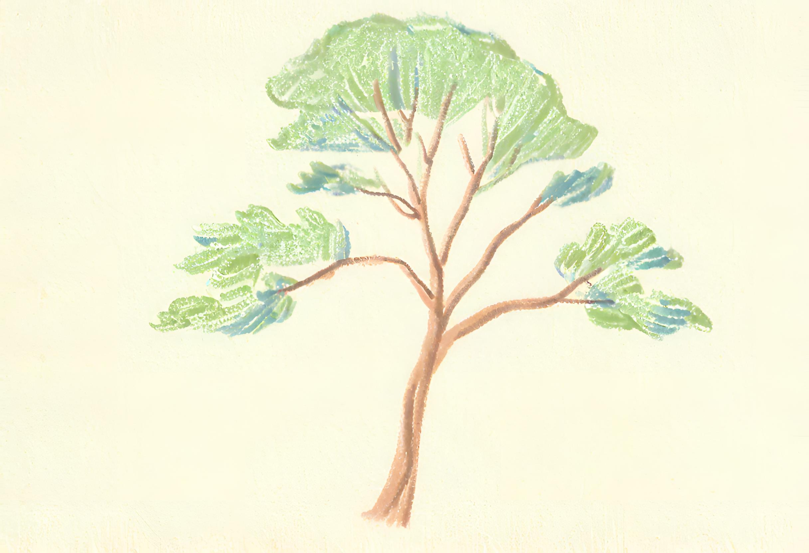

Can you use machine learning to predict future health outcomes?
Overview
Now let’s turn to our second research question, Can maternal factors measured during pregnancy be used to accurately predict infants at risk of low birthweight?
This is a question about prediction—we want to forecast a future outcome based on information available at some specific point in time. Some of the methods that can be used to answer these questions are regression methods, decision trees, random forests, gradient boosted trees, or neural networks.
In this scenario, we want to predict children at high risk of being born with low birthweight based on maternal characteristics observable during pregnancy. The potential predictive variables in our dataset are available from the end of the first trimester so this is our “Time Zero”, the point in time a prediction could be made. Predictions of low birthweight could be useful to inform care decisions during the second and third trimesters, such as more regular monitoring or provision of nutritional supplements.

Created using Stable Diffusion — human + AI.
Decision Trees
To predict low birthweight we will use a model called a single decision tree. This is a type of algorithm that processes data by asking a series of “yes” or “no” questions about different variables—conventionalluy referred to as features—measured in the dataset. The resulting path of decisions resembles a tree with many branches, hence the name “decision tree”.
The first question is at the top of the tree, known as the “root”. Based on the answer to the first question, you follow one of the branches to the next question. Each branch represents a decision or a choice. At each step (or “node”), there’s a new question. Your answers guide you through the tree, moving from one question to the next. Eventually, you reach the end of a branch, which is like the “leaves” of the tree. The leaves give you the final prediction for a given individual, based on their characteristics. In this case, it will be a prediction of whether or not a baby will be born with low birthweight.
We will split the dataset in two to create a “training” set and a “test” set. We train our model using the training set. This means the training data is what the model uses to learn how to predict whether a baby will be born with low weight, based on the available features. In the test step, the trained model is used to predict whether the baby is going to be born with low or normal weight.
The test set acts as a simulation of unseen data, representing information that the algorithm hasn’t encountered or learned from during training. Using a training set to train the model and a test set to test the model is essential so that the model’s generalisation performance can be thoroughly assessed, ensuring its ability to make accurate predictions on new, unseen data and confirming its reliability beyond the training dataset.
This analysis is implemented using Python, perhaps the most popular programming language for machine learning, and the ML library scikit-learn. Click the Code icon below to view the underlying python code to prepare the dataset and run the decision tree analysis.
Code
# Recode categorical variablesbirth_weight_dataset[['patient_id','low','race','smoke','ht','ui']] = birth_weight_dataset[['patient_id','low','race','smoke','ht','ui']].astype('category')# Drop unnecessary variablesbirth_weight_dataset= birth_weight_dataset.drop(['patient_id', 'bwt'], axis=1)# Define the predictor variablesX = birth_weight_dataset.drop(axis=1, columns=['low'])# Define the outcome variabley = birth_weight_dataset[['low']].values# Define the test set and the training setfrom sklearn.model_selection import train_test_splitX_train, X_test, y_train, y_test = train_test_split(X, y, stratify=y, random_state=0, shuffle=1, test_size =0.20)# Import the decision tree classifier from the sci-kit learn libraryfrom sklearn import treefrom sklearn.tree import DecisionTreeClassifier# Run the decision tree algorithmml_model_01 = DecisionTreeClassifier(random_state=0)ml_model_01.fit(X_train, y_train)
DecisionTreeClassifier(random_state=0)
In a Jupyter environment, please rerun this cell to show the HTML representation or trust the notebook. On GitHub, the HTML representation is unable to render, please try loading this page with nbviewer.org.
DecisionTreeClassifier(random_state=0)
Assess the model accuracy
Below we have printed the model accuracy for the training set and the test set. The model accuracy tells us how well the decision tree is doing at classifying children as low birthweight or not based on their mother’s characteristics. The accuracy statistic can take values between 0 and 1, with 1 representing 100% accuracy—perfect predictions. An accuracy of 0.5 would suggest that the model is performing no better than random chance.
Balanced accuracy on training set: 1.000
Balanced accuracy on test set: 0.612
The accuracy in the training set is 1.000 and the accuracy in the training set is 0.612. This means that the model is performing perfectly on the training data but isn’t doing great when it encounters the unseen data in the test set.
This problem is known as overfitting. The model has learned how to predict low or normal birthweight based on the input features but only in the training set. When the model is given an unknown set, the test set, the model performance is much worse. This means the model is not able to generalise to new unseen data and hence, we say the model is overfitted.
Let’s plot our tree and see how this has happened.
Here you can see the mechanics of the decision tree. The first question relates to the variable ptl i.e. number of previous premature labours.
If the answer is no previous premature labours (i.e. \(\le 0.5\)) the next question asks whether or not lwt (weight at last menstrual period) was \(\le 106\) lbs.
If the answer is one or more previous premature labours (i.e. \(\gt 0.5\)) the the next question asks whether or not maternal age was \(\le 31.5\) years.
As you can see, if you allow the tree to grow without any limitation, the tree continues asking “yes/no” questions, branching out more and more. This unrestricted growth can result in a highly complex model that captures not only the underlying patterns but also the noise in the training data. As is the case here, such a tree may perform exceptionally well on the training dataset but fail to predict accurately on new, unseen data due to its over-specialisation (overfitting).
Studying Health Data Science at UNSW Sydney
Embark on a captivating journey into the realm of machine learning with our course HDAT9500 Machine Learning I, where you’ll gain a comprehensive introduction to core techniques applied in the realm of health applications. From mastering algorithms such as linear regression and classification to exploring the intricacies of tree-based methods, clustering, dimensionality reduction, and neural networks, this course equips you with the essential tools to revolutionize healthcare through the power of machine learning.
Explore the dynamic world of machine learning and artificial intelligence in our exciting elective course, HDAT9510 Machine Learning II. Delve into cutting-edge applications and witness firsthand the rapid evolution of these transformative technologies, preparing yourself for the forefront of innovation in today’s ever-changing landscape.
Pre-pruning a tree
In order to avoid this overfitting, let’s impose some restrictions in our decision tree. We are going to be “gardeners” and apply pre-pruning to our tree—this will stop the tree from growing into a perfect fit to the training data.
Let’s restrict the depth of our tree, to let’s say, four branches. This is done by specifying the max_depth = 4 option in the code below.
In a Jupyter environment, please rerun this cell to show the HTML representation or trust the notebook. On GitHub, the HTML representation is unable to render, please try loading this page with nbviewer.org.
Below is our pre-pruned tree. You will notice it is much simpler: the algorithm is using fewer “yes/no” questions to make a final decision, with a maximum of four branches.
Below we have printed off the accuracy report for the training set and the test set for the pre-pruned decision tree. Remember, values closer to 1 indicate better predictive ability.
Balanced accuracy on training set: 0.742
Balanced accuracy on test set: 0.715
The accuracy in the training set is now 0.742. This is actually worse than the original unpruned tree, which had an accuracy of 1.0 in the training dataset. But, importantly, the accuracy in the test dataset is now 0.715. This has risen from the previous value of 0.612 based on the unpruned tree. By prepruning the tree, we have stopped the model from focusing too much on the training data–the problem of overfitting. As a result, the decision tree does better when tested on unseen data.
Understanding the predictions
To get a better understanding of the predictive performance of decision tree model we can compare the true values for low birthweight to the predicted values. This kind of comparison is called a Confusion Matrix. Below is the confusion matrix for the predictions in the training dataset.
Code
# Visualising the Classification Report and the Confusion Matrix for the training set:from sklearn.metrics import classification_report# Temporary variable for plotting purposesax_cm= plt.subplot()import seaborn as snssns.heatmap(confusion_matrix_model_02_train, annot=True, fmt='.0f', ax= ax_cm, cmap=['#399de5', '#e58139', 'red', 'green'], cbar=False, center=50, vmin=0, vmax=100)# labels, title and ticksax_cm.set_xlabel('Predicted value for low birthweight')ax_cm.set_ylabel('Birthweight')ax_cm.set_title('Confusion Matrix for the training dataset')ax_cm.xaxis.set_ticklabels(['Normal', 'Low'])ax_cm.yaxis.set_ticklabels(['Normal', 'Low'])
In the training dataset, there were 104 babies born with normal birthweight. Of these, 99 were correctly predicted to have normal birthweight and 5 were incorrectly predicted to have low birthweight.
There were 47 children born with low birthweight. Of these, 22 were incorrectly predicted to have normal birthweight and 25 were correctly predicted to have low birthweight.
Below is the equivalent confusion matrix based on the model for the test dataset.
Feature importance
Investigating and presenting a feature importance graph after training a decision tree model is useful for gaining insights into the model’s decision-making process and understanding which features have the most significant impact on the predictions. The graph below presents the feature importance for the pre-pruned decision tree. Here, the importance of individual features is calculated based on the number of times a feature is used to make a decision at a node.
Code
import numpy as npdef plot_feature_importances(model): plt.rcParams["figure.figsize"] = (8,5)# Sort feature importances in ascending order indices = np.argsort(model.feature_importances_)# Rearrange feature names so they match the sorted feature importances columns_name = [X.columns[i] for i in indices]# columns_name = ["Race", "Smoking", "Hypertension", "UI", "Weight", "Physician visits during first trimester", "Previous premature labours", "Maternal age"]# Create plot plt.figure() plt.title("Feature Importance") plt.xlabel("Feature") plt.ylabel("Feature Importance") plt.barh(range(X.shape[1]), model.feature_importances_[indices], color='#399de5') plt.yticks(range(X.shape[1]), columns_name) plt.show()plot_feature_importances(ml_model_02)
The variable age (maternal age) is shown to be most important, which makes sense as this is used in three decision nodes. The next important features are ptl (number of previous premature labours) and ftv (number of physician visits during the first trimester), which are used at two nodes each.
Interestingly, the variables smoke (smoking status during pregnancy) and race (mother’s race) are not used at any nodes making them least important in predicting low birthweight in this model.
Test your understanding
Test your understanding by answering these questions based on the analysis above.
True or False The original unpruned tree will be better able to generalise to unseen data
Fill in the blank Based on the confusion matrix for the test dataset, there were babies with low birthweight. Of these, were correctly predicted as having low birth weight and were incorrectly predicted as having normal birthweight.
Choose the correct answer According to the pre-pruned decision tree, the most important feature was

 Back to the main menu
Back to the main menu